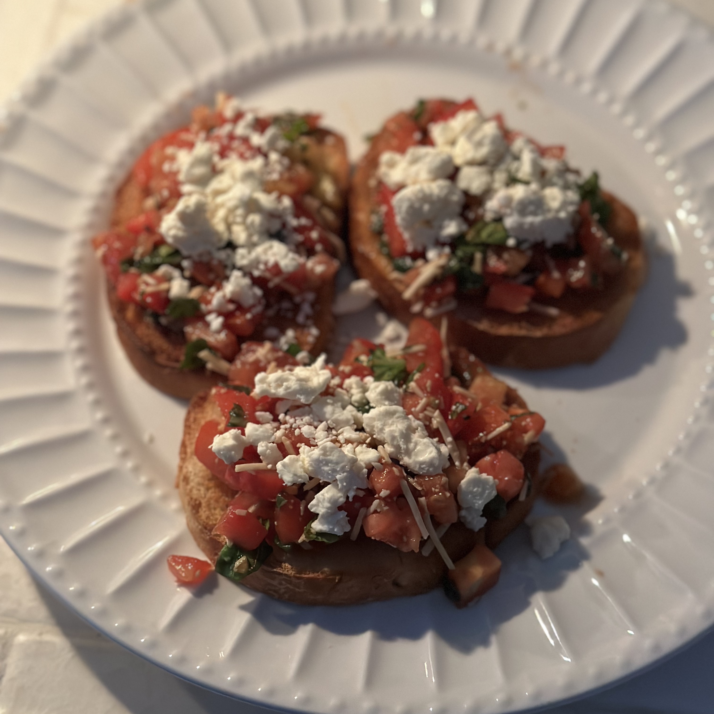

Bruschetta

Ingredients
- 8 roma (plum) tomatoes, diced
- 1/3 cup chopped fresh basil
- 1/4 cup shredded Parmesan cheese
- 4 cloves garlic, minced
- 2 tablespoon balsamic vinegar
- 2 teaspoon olive oil
- 1/2 teaspoon kosher salt
- 1/2 teaspoon freshly ground black pepper
- 1 loaf French bread, toasted and sliced
- Feta cheese, crumbled
Directions
- Mince the garlic.
- Slice bread into 1/2 inch slices.
- In a small cup, mix a small amount of minced garlic and olive oil.
- Brush the olive oil and garlic mixture onto the slices.
- Toast the bread slices until golden.
- While the bread is toasting, dice the roma tomatoes.
- Chop the fresh basil.
- Grate the Parmesan cheese.
- In a large bowl, toss together the tomatoes, basil, Parmesan cheese, and garlic.
- Mix in the balsamic vinegar, olive oil, kosher salt, and pepper.
Serving Instructions
- Place two spoonfuls of bruschetta on each toasted bread slice.
- Add feta crumbles on top.
- Enjoy!
Additional Info
- Prep: 15 min
- Total: 15 min
- Servings: 8
- Yield: 8 servings
Special thanks to my beautiful, kind, and smart girlfriend for reminding me to include feta in the recipe and introducing me to bruschetta at her aunt's house.